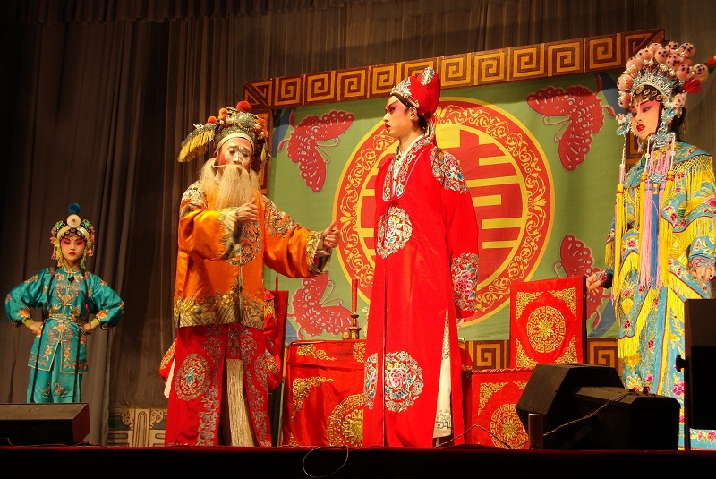
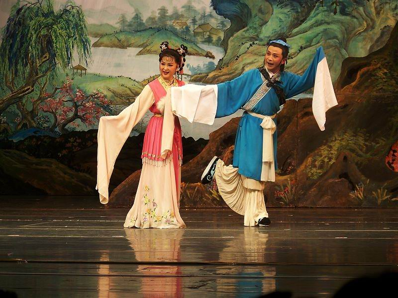

-------------------------------------------------------------------------------------------------------------- produced by Sawatari™ ------------------------------------------------------------------------------------------------------------------
 
黄梅戏，旧称黄梅调或采茶戏，中国五大剧种之一，与京剧、越剧、评剧 、豫剧并称中国五大剧种。黄梅戏唱腔淳朴流畅，以明快抒情见长，具有丰富的表现力；黄梅戏的表演质朴细致，以真实活泼著称。一曲《天仙配》让黄梅戏流行于大江南北，在海外亦有较高的声誉。其源于湖北、安徽、江西三省交界处黄梅一带的采茶调。清末传入毗邻的安徽省怀宁县等地区，与当地民间艺术结合，并用安庆方言歌唱和念白，逐渐发展为一个新生的戏曲剧种。一度被称为“怀腔”、“皖剧”。2006年5月20日经国务院批准列入第一批国家级非物质文化遗产名录。
黄梅戏原称黄梅调，又叫采茶调，发源于湖北省黄梅县。她是安徽省汉族的主要地方戏剧种，发源于以安徽省安庆市为中心的皖江流域（上至皖鄂交界的大别山地区，下至安徽安庆宿松、岳西、太湖、望江、潜山、怀宁、安庆市区、枞阳、桐城以及安徽池州在内的广大皖江流域），并最终以完整的独立剧种的形式诞生于安庆地区、成长于安庆地区、兴盛于安庆地区。 黄梅戏原名黄梅调、怀腔或府调等，现主要流布于安徽省安庆市及其周边地区。
黄梅戏的唱腔属板式变化体，有花腔、彩腔、主调三大腔系。花腔以演小戏为主，曲调健康朴实，优美欢快，具有浓厚的生活气息和民歌小调色彩；彩腔曲调欢畅，曾在花腔小戏中广泛使用；主调是黄梅戏传统正本大戏常用的唱腔，有平词、火攻、二行、三行之分，其中平词是正本戏中最主要的唱腔，曲调严肃庄重，优美大方。黄梅戏以抒情见长，韵味丰厚，唱腔纯朴清新，细腻动人，以明快抒情见长，具有丰富的表现力，且通俗易懂，易于普及，深受各地群众的喜爱。在音乐伴奏上，早期黄梅戏由三人演奏堂鼓、钹、小锣、大锣等打击乐器，同时参加帮腔，号称“三打七唱”。中华人民共和国成立以后，黄梅戏正式确立了以高胡为主奏乐器的伴奏体系。
黄梅戏的角色行当体制是在“二小戏”、“三小戏”的基础上发展起来的，包括正旦、正生、小旦、小生、花旦、小丑、老旦、老生、花脸、刀马旦、武二花等行。虽有分工，但并无严格限制，演员常可兼扮他行。黄梅戏的表演载歌载舞，质朴细致，真实活泼，富有生活气息，以崇尚情感体验著称，具有清新自然、优美流畅的艺术风格。黄梅戏中有许多为人熟知的优秀剧目，而以《天仙配》、《女驸马》、《牛郎织女》、《夫妻观灯》、《打猪草》、《纺棉纱》等最具代表性。
黄梅戏的发展历史，大致分为三个阶段：第一阶段，约从清乾隆到辛亥革命前后。产生和流传到皖、鄂、赣三省间的采茶调、江西调、桐城调、凤阳歌，受当地戏曲(青阳腔、徽调)演出的影响，与莲湘、高跷、旱船等民间艺术形成结合，逐渐形成了一些小戏。进一步发展，又从一种叫“罗汉桩”的曲艺形式和青阳腔与徽调吸收了演出内容与表现形式，于是产生了故事完整的本戏。从小戏到本戏还有一种过渡形式，老艺人称之为“串戏”。所谓“串戏”就是各自独立而又彼此关连着的一组小戏，有的以事“串”，有的则以人“串”。“串戏”的情节比小戏丰富，出场的人物也突破了小丑、小旦、小生的三小范围。其中一些年龄大的人物需要用正旦、老生、老丑来扮演。这就为本戏的产生创造了条件。第二阶段，是从辛亥革命到1949年。这一阶段，黄梅戏演出活动渐渐职业化，并从农村草台走上了城市舞台。黄梅戏入安庆城后，曾与京剧合班，并在上海受到越剧、扬剧、淮剧和从北方来的评剧(时称“蹦蹦戏”)的影响，在演出的内容与形式上都起了很大变化。编排、移植了一批新剧目，其中有连台本戏《文素臣》、《宏碧缘》、《华丽缘》、《蜜蜂记》等。音乐方面，对传统唱腔进行初步改革，减少了老腔中的虚声衬字，使之明快、流畅，观众易于听懂所唱的内容。取消了帮腔，试用胡琴伴奏。表演方面，吸收融化了京剧和其他兄弟剧种的程式动作，丰富了表现手段。其它如服装、化妆和舞台设置，亦较农村草台时有所发展。 第三阶段，是1949至今。1952年，黄梅戏艺人带着《打猪草》、《蓝桥会》等剧目到上海演出。几十年来造就了一大批演员，除对黄梅戏演唱艺术有突出成就的严凤英、王少舫等老一辈艺术家外，中青年演员马兰、韩再芬等相继在舞台上、银幕上和电视屏幕上展现了各自的英姿，引起了观众的注视。严凤英、王少舫合演的《天仙配》，曾二度摄制成影片，轰动海内外。